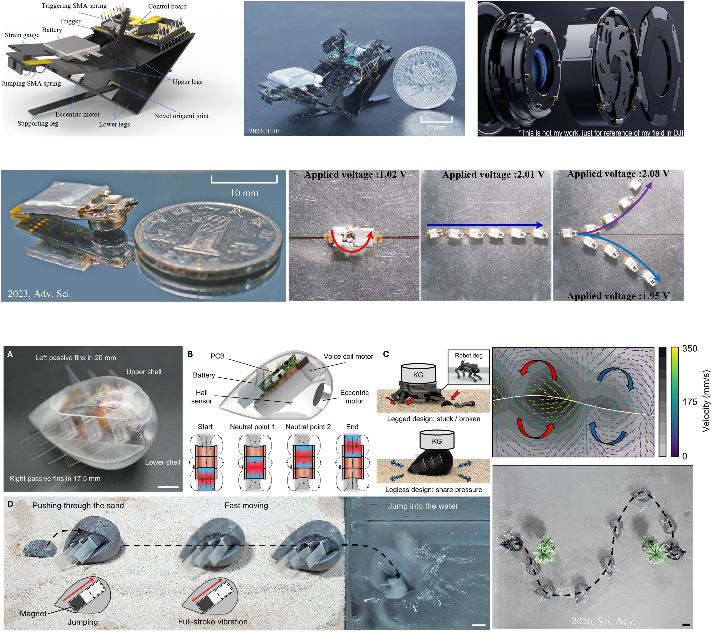

2024
Research Assistant
Harbin Institute of Technology (Shenzhen), supervisor: Prof. Yao Li (李曜), and Prof. Bing Li (李兵).

Academic Homepage
Focusing on miniaturized electromechanical system for 6 years
专注小型化机电系统研发与研究 6 年
Ph.D. student
I am a Ph.D. student in Prof. Qiguang He's group (2024-2027, plan on). My research interests are small-scale robotics, including miniature iris systems, jumping robots, crawling robots, story robots, toy robots, and inspection robots.
Harbin Institute of Technology (Shenzhen), supervisor: Prof. Yao Li (李曜), and Prof. Bing Li (李兵).
Scuola Superiore Sant'Anna, Italy.
SZ DJI Technology Co., Ltd.
Training across mechanical engineering and miniature robotics.
Ph.D. candidate in Mechanical Engineering.
M.S. in Mechanical Engineering.
B.S. in Mechanical Engineering.
Exchange student in Mechanical Engineering.
Google Scholar · Updated October 13, 2026
† Equal contribution. * Corresponding author. Journal papers are grouped by their final volume/issue year; earlier online publication years are noted where applicable.
Selected recognitions and media coverage.
目前（入职日期2026.6-2026.12）课题组正在招聘机器人机电设计方向的全职研究助理（RA），工资15000~18000 HKD，RA前两个月为打杂，此后，课题组为有读博潜力的 RA 提供独立研究项目和相应的论文、专利署名权。欢迎优秀本科毕业生，硕士毕业生，以及优秀的交流访学学生申请。申请邮件请发送至我的邮箱或何奇洸教授的邮箱 qiguanghe@cuhk.edu.hk
Full-time Research Assistant openings in robotic mechatronic design are available from June 2026 to September 2026. Salary: 15,000-18,000 HKD. The group offers RAs independent research projects together with authorship on related papers and patents, with minimal routine support work. Outstanding bachelor's graduates, master's graduates, and strong visiting or exchange students are welcome to apply. Please send applications to qiguanghe@cuhk.edu.hk.